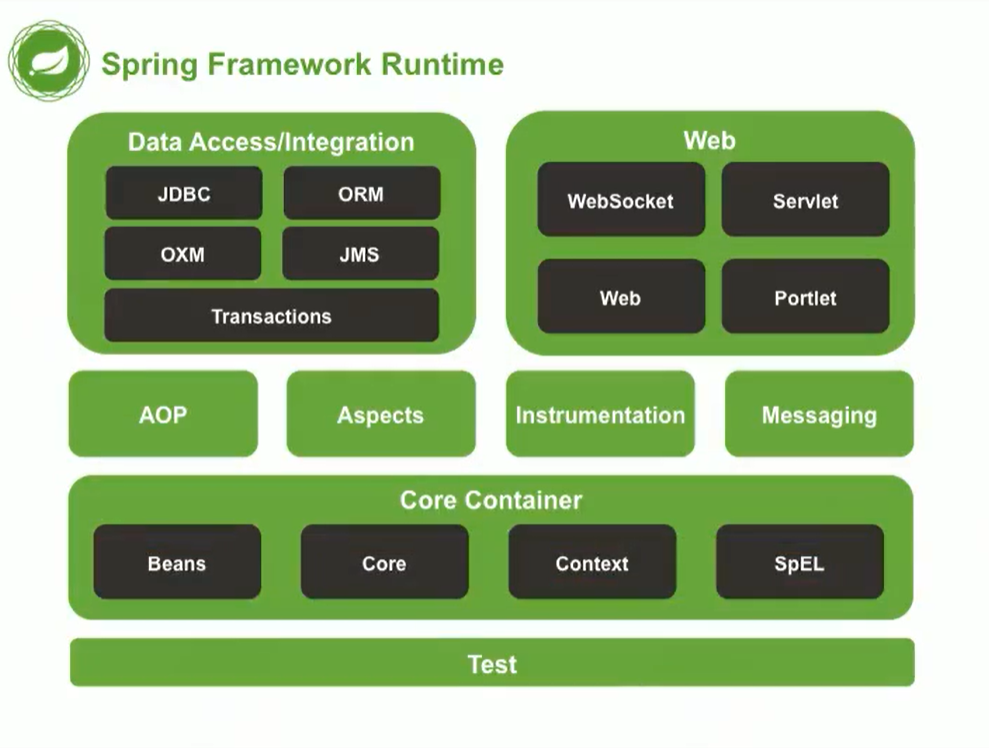
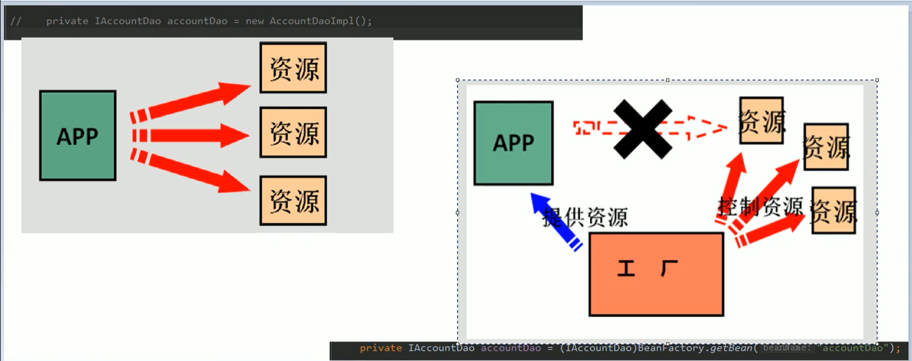
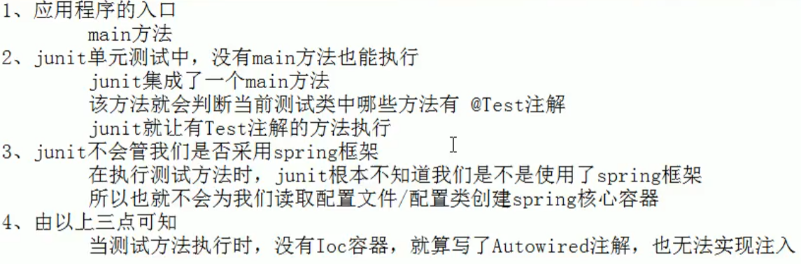
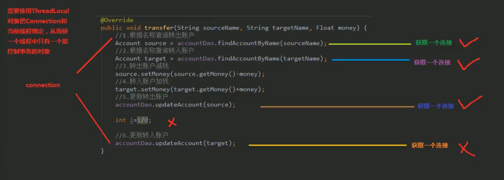

is4b3lla3’s notes
spring结构

三层架构
表现层调用业务层
业务层调用持久层
表现层（JSP）：
表现层也称为界面层，位于最外层（最上层），离用户最近。用于显示数据和接收用户输入的数据，为用户提供一种交互式操作的界面业务层（逻辑层、service层）：
业务层（Business Logic Layer）无疑是系统架构中体现核心价值的部分。它的关注点主要集中在业务规则的制定、业务流程的实现等与业务需求有关的系统设计，也即是说它是与系统所应对的领域（Domain）逻辑有关，很多时候，也将业务逻辑层称为领域层。持久层（DAO）：
持久层，有时候也称为是数据访问层，其功能主要是负责数据库的访问，可以访问数据库系统、二进制文件、文本文档或是XML文档。采用DAO模式，建立实体类和数据库表映射（ORM映射）。简单的说法就是实现对数据表的select、insert、update以及delete的操作。如果要加入ORM的元素，那么就会包括对象和数据表之间的mapping，以及对象实体的持久化。
三层与MVC的区别
三层与MVC的最不同的地方在于三层是没有Controller控制器的概念。虽然同样是架构级别的，三层与MVC相同的地方在于他们都有一个表现层（view），但是他们不同的地方在于其他的两个层。MVC没有把业务的逻辑访问看成两个层，这是采用三层架构或MVC搭建程序最主要的区别。当然了，在三层中也提到了Model概念，但是三层架构中Model的概念与MVC中Model的概念是不一样的，“三层” 中典型的Model层是以实体类构成的，而MVC里，则是由业务逻辑与访问数据组成的。
在三层中JSP与Servlet代码都属于表示层，业务逻辑层则是完成业务规则的实体类，数据访问层则是JDBC等代码
MVC中：model：Java bean； view：jsp；controller：servlet
程序之间的耦合
耦合
程序之间的依赖关系
- 类之间的依赖
- 方法之间的依赖
解耦
降低程序之间的依赖关系
- 实际开发中：
编译期不依赖，运行时才依赖
编译期的依赖导致该类独立性很差
例子：
jdbc两种注册方式：
Class.forName("com.mysql.jdbc.Driver()")编译时不依赖，运行依赖，检查jar包，没有jar包抛出异常DriverManager.registerDriver(new com.mysql.jdbc.Driver());编译时依赖，检查jar包，没有jar包编译失败
解耦的思路
- 创建对象时候使用反射，而避免
new关键字 - 通过读取配置文件，来获取要创建的对象全限定类名
- Bean：计算机英语中：可重用组件的含义
- java bean（Java编写的可重用组件） > 实体类
- 配置文件来配置类
配置的内容：唯一标识：全限定类名
（key=>value） - 读取配置文件内容，反射创建对象
配置文件可以是xml也可以是properties
- static｛｝
称为static代码块 ,也叫静态代码块，
是在类中独立于类成员的static语句块，可以有多个，位置可以随便放，它不在任何的方法体内，JVM加载类时会执行这些静态的代码块，如果static代码块有多个，JVM将按照它们在类中出现的先后顺序依次执行它们，每个代码块只会被执行一次
利用静态代码块可以对一些static变量进行赋值
静态代码块只在类加载是执行一次
ioc 控制反转

控制权转移
把创建对象的权利交给框架，是框架的的重要特征，并非面向对象的专用术语。它包括依赖注入和依赖查找
ioc作用：消减计算机程序的耦合。（解除代码依赖关系）
spring中的ioc以及两个接口区别
- Spring中的IOC容器是Map结构
| key String类型 | value Object类型 |
|---|---|
| 1 | 2 |
1 | public class Client { |
三种创建bean的方式
1 | <!--把对象的创建交给spring处理--> |
bean的作用范围
Spring的bean对象默认是单例的。
- bean的作用范围调整：
标签里的scope属性：用于指定bean的作用范围 - 取值：
- singleton：单例（默认值）
- prototype：多例
- request：作用于Web应用的请求范围
- session：作用于Web应用的会话范围
- global-session：作用于集群环境的会话范围（全局会话范围）。当不是集群环境是，它等于session
bean对象的生命周期
init-method：初始化方法
destroy-method：销毁方法
单例
- 当容器创建时对象出生（立即创建）
- 只要容器存在，对象一直存在
- 容器销毁，对象销毁
（单例对象生命周期和容器相同）1
2
3
4
5
6
7
8
9
10
11
12
13
14
15
16
17public class AccountServiceImpl implements IAccountService {
public AccountServiceImpl(){
System.out.println("instantiate successfully");
}
public void saveAccount() {
System.out.println("saveAccount of service has exec");
}
public void init(){
System.out.println("初始化");
}
public void destory(){
System.out.println("销毁");
}
}
1 | //Client.java |
多例
当我们使用对象时Spring框架为我们创建（延迟创建）
对象在使用过程中一直存活
当对象长时间不用且没有别的对象引用时，Java的GC自动回收
1 | <bean id="accountService" class="com_1.service.impl.AccountServiceImpl" |
Spring依赖注入
Dependency Injection
IOC作用：消除程序间的耦合（依赖关系）
依赖关系的管理交给Spring维护
在当前类需要用到其它类的对象，由Spring来提供，我们只需要在配置文件中说明。依赖关系的维护：依赖注入
依赖注入的数据有三类：
- 基本类型和String
- 其他bean类型。（在配置文件中或者注解配置过的bean）
- 复杂类型/集合类型
注入的方式有三种
- 构造函数提供
构造函数注入
- 使用constructor-arg
- 标签出现的位置：bean标签内部
- 标签中的属性：
- type 指定要注入的数据类型，该数据类型也是构造函数中某些参数的类型
- index 指定注入数据的索引（从0开始）
- name 指定名称的参数赋值
以上三个指定构造函数中参数来赋值
- value 提供基本类型和String类型数据
- ref 指定其他Bean类型，引用（它指Spring的Ioc核心容器中的bean对象）
- 特点：获取Bean对象时，注入数据是必须操作，否则无法操作成功
改变了Bean对象的实例化方式。使我们创建对象时，用不到的数据也会提供1
2
3
4
5
6
7
8
9<bean id="accountService" class = "com_1.service.impl.AccountServiceImpl">
<constructor-arg name="name" value="test" ></constructor-arg>
<!-- xml中存储都是字符串，这里自动转成Integer -->
<constructor-arg name="age" value="18" ></constructor-arg>
<!-- 配置一个日期对象 -->
<constructor-arg type="java.util.Date" name="brithday" ref="now" ></constructor-arg>
</bean>
<!-- 日期对象-->
<bean id="now" class="java.util.Date"></bean>
- set方法提供
set方法注入
涉及的标签:
property出现位置:bean标签内部
标签的属性:
- name指定注入时set方法名称
- value提供基本类型和String类型数据
- ref指定其他Bean类型，引用（它指Spring的Ioc核心容器中的bean对象）
优势:创建对象时没有明确限制,可以使用默认构造函数
缺点:若某个成员变量必须有值,则获取对象时set方法可能没有执行
1 | <bean id="accountService2" class="com_1.service.impl.AccountServiceImpl2"> |
- 注解提供
复杂类型注入/集合类型注入(set方法)
用于给List结构集合注入的标签有List,Array和Set
用于给Map结构集合注入的标签有Map和Props
结构相同,标签可以互换1
2
3
4
5
6
7
8
9
10
11
12
13
14
15
16
17
18
19
20
21
22
23
24
25
26
27
28
29
30
31
32
33
34
35<bean id="accountService3" class="com_1.service.impl.AccountServiceImpl3">
<property name="myStrs">
<array>
<value>ABC</value>
<value>Y65</value>
<value>JK1</value>
</array>
</property>
<property name="myList">
<list>
<value>###</value>
<value>$$$</value>
<value>^^^</value>
</list>
</property>
<property name="mySet">
<set>
<value>ABC</value>
<value>Y65</value>
<value>JK1</value>
</set>
</property>
<property name="myMap">
<map>
<entry key="username" value="admin"></entry>
<entry key="username1"><value>admin1</value></entry>
</map>
</property>
<property name="myProps">
<props>
<prop key="key">value</prop>
<prop key="key1">value1</prop>
</props>
</property>
</bean>
Spring中ioc的常用注解
1 | <!-- 告知Spring在创建容器时要扫描的包，配置所需要的标签不是在<beans>约束中，而是在context名称空间和约束中 --> |
- 曾经的xml配置
<bean id="accountService" class = "com.service.impl.AccountServiceImpl"></bean>
用于创建对象
作用和xml配置文件中写bean标签实现功能一样
Component:
- 出现位置：类
- 作用：用于把当前类对象存入Spring容器中
- 属性：
- value：用于指定bean的id，当不写时，默认值是当前类名，首字母小写
Controller：一般用于表现层
Service：一般用于业务层
Repository：一般用于持久层
以上3个注解的作用和属性和Component一样。这三个注解是Spring框架提供的明确的三层使用的注解，使我们三层对象更加清晰。不属于这三层的对象用Component
用于注入数据
作用和xml配置文件中的bean标签中的property标签一样
AutoWired
- 作用：自动按照类型注入。只要容器中有唯一的一个bean对象类型和要注入的变量类型匹配，就可以注入成功。
如果没有任何bean的类型和要注入类型变量匹配，则报错。如果容器中有多个bean对象类型，出现位置：可以是变量，也可以是方法（在使用注解时，set方法不是必须的）Qualifier
- 作用：再按照类型注入的基础之上再按照名称注入，他在给类成员注入时不能单独使用（和AutoWired配合使用），但是在给方法参数注入时可以
- 属性：
- 作用：直接按照bean的ID注入，可以独立使用。
- 属性：
- name：用于指定bean的ID
以上3个注解都只能注入其他bean类型数据，而基本类型和String类型无法使用。集合数据类型只能通过XML来实现
Value
- 作用：用于注入String和基本类型数据
- 属性：
- value：用于指定数据的值。它可以使用Spring中的SpEL（Spring的el表达式）
- SpEL的写法：${表达式}
- value：用于指定数据的值。它可以使用Spring中的SpEL（Spring的el表达式）
用于改变范围
作用和xml配置文件中的bean标签中的scope属性一样
Socope
- 作用：用于指定bean的作用范围
- 属性：
- value：指定范围的取值。常用取值：singleton，prototype。（不写默认单例）
用于生命周期相关
作用和xml配置文件中的bean标签中的init_method，destroy-method属性一样
PreDestroy
作用：用于指定销毁方法
PostConstruct
作用：用于指定初始化方法
- bean.xml
1
2
3
4
5
6
7
8
9
10
11
12
13
14
15
16
17
18<!-- 创建容器时，要扫描的包-->
<context:component-scan base-package="com"></context:component-scan>
QueryRunner对象
<bean id="runner" class="org.apache.commons.dbutils.QueryRunner" scope="prototype">
<!-- 注入数据源-->
<constructor-arg name="ds" ref="dataSource"></constructor-arg>
</bean>
<!-- 配置数据源-->
<bean id="dataSource" class="com.mchange.v2.c3p0.ComboPooledDataSource">
<!-- 连接数据库的必备信息-->
<property name="driverClass" value="com.mysql.jdbc.Driver"></property>
<property name="jdbcUrl" value="jdbc:mysql://localhost:3306/zcs"></property>
<property name="user" value="root"></property>
<property name="password" value="0903"></property>
</bean>
AnnotationConfigApplicationContext的使用
之前的实现都是使用如下代码：
1 | //1.获取容器 |
ClassPathXmlApplicationContext类：加载类路径下的配置文件，要求配置文件必须在类路径下。
使用
AnnotationConfigApplicationContext类来通过读取注解创建容器1
2
3
4
5//1.获取容器
//参数为：一个或多个带注解的类，如果参数写了某个注解类，则不扫描该包也可以在容器中创建对象
ApplicationContext ac = new AnnotationConfigApplicationContext(SpringConfiguration.class);
//2.得到业务层对象
IAccountService as = ac.getBean("accountService", IAccountService.class);SpringConfiguration
1
2
3
4
5
6
7
(basePackages = "com")
(value =JdbcConfig.class)
("classpath:JdbcConfig.properties")
public class SpringConfiguration {
}JdbcConfig
1
2
3
4
5
6
7
8
9
10
11
12
13
14
15
16
17
18
19
20
21
22
23
24
25
26
27
28
29
30
31
32
33
34
35
36
37
38
39
40
41
42
43
44
45
46
47public class JdbcConfig {
("${Driver}")
private String Driver;
("${Url}")
private String Url;
("${User}")
private String User;
("${Password}")
private String Password;
/**
* 创建QueryRunner对象
*
* @param ds
* @return
*/
("runner")
("prototype")
public QueryRunner createQueryRunner(DataSource ds) {
return new QueryRunner(ds);
}
/**
* 创建数据源对象
*
* @return
*/
("dataSource")
public DataSource createDataSource() {
try {
ComboPooledDataSource cds = new ComboPooledDataSource();
cds.setDriverClass(Driver);
cds.setJdbcUrl(Url);
cds.setUser(User);
cds.setPassword(Password);
return cds;
} catch (Exception e) {
throw new RuntimeException(e);
}
}
}JdbcConfig.properties
1
2
3
4Driver=com.mysql.jdbc.Driver
Url=jdbc:mysql://localhost:3306/zcs
User=root
Password=xxxx
之前基于XML配置中runner为多例，而现在基于注解配置则为单例。所以要加Scope注解
配置类，等效于bean.xml
Spring中的新注解
Configuration
- 作用：指定当前类是配置类
- 细节：当配置类作为AnnotationConfigApplicationContext对象创建的参数时，该注解可以不写。
如果不写该注解，即使使用ComponentScan扫描该包，也不会放到容器里
ComponentScan
- 作用：用于通过注解指定Spring在创建容器时要扫描的包。（等效于
<context:component-scan>） - 属性： value和basePackages相同，都是用于指定创建容器时要扫描的包
Bean
- 作用：用于把当前方法的返回值作为Bean对象存入Spring的IOC容器中。
- 属性：name：指定Bean的id，不写的默认值是当前方法名称
- 细节：使用注解配置方法时，如果方法有参数，Spring框架会查找容器中有无可用的Bean对象。查找方式和AutoWired一样。
Import
- 作用：用于导入其他的配置类
import("xxx.class") 例如在一个主配置类处添加import注解导入其他一个或多个子配置类 - 属性：value：用于指定其他配置类的字节码。当我们使用import类的为父配置类，导入的类为子配置
PropertySource
- 作用：用于指定Properties文件的位置
- 属性：
value:指定文件名称和路径,(classpath:xxx/xxx.properties，classpath表示类路径下)
Junit

Spring整合Junit配置
使用Junit单元测试，测试配置
- Spring整合Junit的配置
- 属性：
- location：指定xml位置加上classpath关键字，表示在类路径下
- classes：指定注解类所在位置
当使用Spring5.x版本时，要求Junit版本4.12以上
事务的一致性
需要使用ThreadLocal对象把Connection和当前对象绑定，从而使一个线程中只有一个能控制事务的对象

1 | public List<Account> findAllAccount() { |
catch代码块直接e.printstack()的话，执行完后会往下继续执行，此处抛出异常(throw new RuntimeException(e);)，才能防止代码继续向下执行(return返回对象)
1 | public List<Account> findAllAccount() { |
connectionUtils.getThreadConnection()作为query()方法第一个参数connectionUtils类中，set方法注入DataSource。
可以通俗理解。Query原先是多例的，如果直接注入，每次都是一个新的bean，相当于多个连接在操作同一个数据库。而事物保证必须是单例，所以使用utils确保拿到的是同一个对象。
就是不用spring注入获得的连接，只用工具类创建和线程绑定的连接
如果表是MyiSAM是不支持事务的
动态代理
当匿名内部类访问外部成员变量时候，外部变量要用final修饰（因为局部变量随着方法的调用而调用，随着方法消失而消失，而对内存的内容不会立即消失，还会继续引用局部变量）
- 动态代理
- 特点：字节码随用随创建，随用随加载
- 作用：不修改源码的基础上，对方法增强
- 分类：
- 基于接口的动态代理
- 涉及的类：Proxy
- 提供者：JDK官方
- 如何创建代理对象：使用Proxy类中的
newProxyInstance()方法 - 创建代理对象要求：被代理类最少实现一个接口，如果没有不能使用
newProxyInstance()方法的参数- ClassLoader：类加载器
- 加载代理对象字节码，和被代理对象使用相同类加载器。固定写法：
xx.getClass().getClassLoader()
- 加载代理对象字节码，和被代理对象使用相同类加载器。固定写法：
- Class[]：字节码数组
- 用于让代理对象和被代理对象拥有相同方法。固定写法：
xxx.getClass().getInterfaces()
- 用于让代理对象和被代理对象拥有相同方法。固定写法：
- InvocationHandler：用于提供增强的代码
- 他是让我们写如何代理，我们一般都是写一个该接口的实现类，通常情况下都是匿名内部类但不必须。
- 此接口实现类都是谁用谁写
- 他是让我们写如何代理，我们一般都是写一个该接口的实现类，通常情况下都是匿名内部类但不必须。
- ClassLoader：类加载器
- 基于子类的动态代理
- 基于接口的动态代理
1 | public class Client { |
基于子类的动态代理
1 |
|
AOP
面向切片编程，通过预编译方式和运行期动态代理实现程序功能的统一维护的一种技术
- 作用：在程序运行期间，不修改源码对已有方法增强。
- 优点：
减少重复代码 提高开发效率 维护方便AOP相关术语
- JoinPoint：连接点是指那些被拦截到的点。在Spring中，这些点指的是方法，因为Spring只支持方法类型的连接点。
- Pointcut：切入点是指我们要对哪些JoinPoint进行拦截的定义。（指被增强的方法）
- Advice(通知/增强)：通知就是指拦截到的JoinPoint之后要做的事情。
通知的类型：前置通知，后置通知，异常通知，最终通知，环绕通知。
- Introduction(引介)：是一种特殊的通知，在不修改类代码的前提下。Introduction可以在运行期为类动态地添加一些方法和字段。
- Target(目标)：代理的目标对象
- Weaving(织入)：把增强应用到目标对象来来创建新的代理对象的过程
Spring采用动态代理织入，而Aspectt7采用编译器和类装载期织入。 - Proxy：一个类被AOP织入增强后，就产生一个结果代理类
- Aspect(切面)：是切入点和通知(引介)的结合
Spring基于AOP配置步骤
- 把通知Bean也交给Spring
- 使用aop:config标签表明开始AOP配置
- 使用aop:aspect标签表明配置切面
- id属性：给切面提供一个唯一标识
- ref属性：指定通知类bean的id
- 在aop:aspect内部使用对应标签来配置通知类型
//现在的示例是让printLog方法在切入点方法之前执行，是前置通知- aop:before 表示前置通知
- method属性：用于指定Logger类中哪个方法是前置通知
- pointcut属性：用于指定切入点表达式。该表达式含义指的是对业务层哪些方法增强
- 切入点表达式写法：
- aop:before 表示前置通知
- 前置通知
在切入点方法之前执行 - 后置通知
在切入点方法正常执行之后执行 - 异常通知
在切入点方法执行产生异常后执行 - 最终通知
无论切入点方法是否正常执行，都会在后面执行
后置通知和异常通知只能同时执行一个
- old
1
2
3
4
5
6
7
8
9
10
11
12
13
14
15
16
17
18
19
20
21
22
23
24
25
26
27
28
29
30
31
32<beans xmlns="http://www.springframework.org/schema/beans"
xmlns:xsi="http://www.w3.org/2001/XMLSchema-instance"
xmlns:aop="http://www.springframework.org/schema/aop"
xsi:schemaLocation="http://www.springframework.org/schema/beans
http://www.springframework.org/schema/beans/spring-beans.xsd
http://www.springframework.org/schema/aop
http://www.springframework.org/schema/aop/spring-aop.xsd">
<!-- 配置Spring的IOC，把Service对象配置进来-->
<bean id="accountService" class="com.service.impl.AccountServiceimpl"></bean>
<!-- 配置Logger-->
<bean id="Logger" class="com.utils.Logger"></bean>
<!-- 配置AOP-->
<aop:config>
<!-- 配置切面-->
<aop:aspect id="logAdvice" ref="Logger">
<!-- 配置通知类型，并建立通知方法和切入点方法的关联-->
<!-- 前置通知 -->
<aop:before method="beforePrintLog"
pointcut="execution(* com.service.impl.*.*(..))"></aop:before>
<!-- 后置通知-->
<aop:after-returning method="afterReturnPrintLog"
pointcut="execution(* com.service.impl.*.*(..))"></aop:after-returning>
<!-- 异常通知-->
<aop:after-throwing method="afterThrowingPrintLog"
pointcut="execution(* com.service.impl.*.*(..))"></aop:after-throwing>
<!-- 后置通知-->
<aop:after method="afterPrintLog"
pointcut="execution(* com.service.impl.*.*(..))"></aop:after>
</aop:aspect>
</aop:config>
</beans> - new
1
2
3
4
5
6
7
8
9
10
11
12
13
14
15
16
17
18<!-- 前置通知 -->
<aop:before method="beforePrintLog"
pointcut-ref="pt1"></aop:before>
<!-- 后置通知-->
<aop:after-returning method="afterReturnPrintLog"
pointcut-ref="pt1"></aop:after-returning>
<!-- 异常通知-->
<aop:after-throwing method="afterThrowingPrintLog"
pointcut-ref="pt1"></aop:after-throwing>
<!-- 后置通知-->
<aop:after method="afterPrintLog"
pointcut-ref="pt1"></aop:after>
<!-- 配置切入点表达式 id:用于指定表达式唯一标识，expression：表达式内容
此标签写在aop:aspect内部只能当前标签使用，写在外部则所有切面可用
//注意：约束要求：标签写在aop:aspect外部并写在切面之前而不是之后
-->
<aop:pointcut id="pt1" expression="execution(* com.service.impl.*.*(..))"/>
Spring中的环绕通知
Spring中的环绕通知
他是Spring框架提供的可以在代码中手动控制增强方法何时执行的方式
前面的例子是通过配置。下图是通过代码
logger.java
1
2
3
4
5
6
7
8
9
10
11
12
13
14
15
16
17
18
19
20
21
22
23
24
25
26
27
28
29
30
31
32
33
34
35
36
37
38
39
40
41
42
43
44
45
46
47
48
49
50
51
52
53
54
55
56
57
58
59
60
61
62
63
64
65
66
67
68
69
70
71
72
73
74
75
76
77
78
79
80
81
82
83
84
85
86package com.utils;
import org.aspectj.lang.ProceedingJoinPoint;
import org.aspectj.lang.annotation.*;
import org.springframework.stereotype.Component;
/**
* 记录日志的工具类，里面提供了公共代码
*/
("Logger")
//表示当前类是切面类
public class Logger {
//切入点
("execution(* com.service.impl.*.*(..)))")
public void pt1(){
}
/**
* 前置通知
*/
("pt1()")
public void beforePrintLog(){
System.out.println("前置通知Logger类中的printLog方法开始记录日志");
}
/**
* 后置通知
*/
public void afterReturnPrintLog(){
System.out.println("后置通知Logger类中的printLog方法开始记录日志");
}
/**
* 异常通知
*/
public void afterThrowingPrintLog(){
System.out.println("异常通知Logger类中的printLog方法开始记录日志");
}
/**
* 最终通知
*/
("pt1()")
public void afterPrintLog(){
System.out.println("最终通知Logger类中的printLog方法开始记录日志");
}
/**
* 环绕通知
* 问题：
* 当我们配置了环绕通知以后，切入点方法没有执行，而通知方法执行了
* 分析：
* 通过对比动态代理中环绕代码，发现动态代理中的环绕通知有明确的切入点方法调用比如invoke。
* 解决：
* Spring提供了一个接口：ProceedingJoinPoint，该接口有一个方法，proceed()，此方法相当于明确调用切入点方法。
* 该接口可以作为环绕通知的方法参数，程序执行时，Spring框架会为我们提供该接口的实现类供我们使用
*
* Spring中的环绕通知
* 他是Spring框架提供的可以在代码中手动控制增强方法何时执行的方式
*/
("pt1()")
public Object aroundPrintLog(ProceedingJoinPoint proceedingJoinPoint){
Object returnValue = null;
try{
Object args[] = proceedingJoinPoint.getArgs();//得到方法的参数
System.out.println("exec aroundPrintLog");//前置通知
returnValue = proceedingJoinPoint.proceed();//明确调用业务层方法(切入点)
System.out.println("exec aroundPrintLog");//后置通知
return returnValue;
//这里不用Exception，拦不住该异常
}catch (Throwable t){
System.out.println("exec aroundPrintLog");//异常通知
}finally {
System.out.println("exec aroundPrintLog");//最终通知
}
return returnValue;
}
}bean.xml
1 | <beans xmlns="http://www.springframework.org/schema/beans" |

JDBCTemplate

- JDBCTemplate是Spring框架中提供的一个对象，是对原始JDBC API对象的简单封装。Spring框架为我们提供了很多的操作模板类